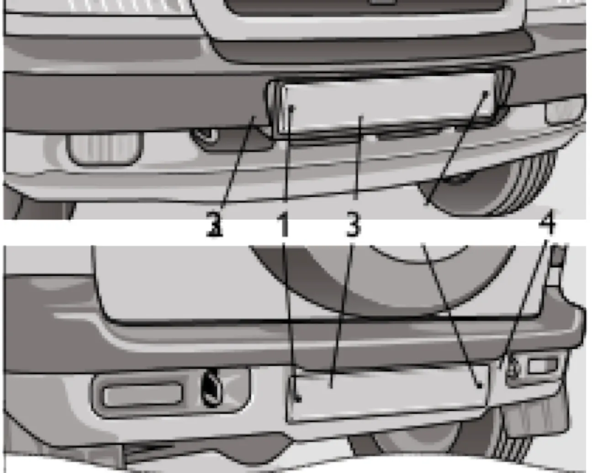

ЭКСПЛУАТАЦИЯ АВТОМОБИЛЯ
Установка номерных знаков
номерные знакирегистрациябамперывинты
Номерные знаки крепятся непосредственно к переднему и заднему бамперам при помощи самонарезающих винтов с шайбами.

← Chevrolet Niva — руководство
Номерные знаки крепятся непосредственно к переднему и заднему бамперам при помощи самонарезающих винтов с шайбами.
